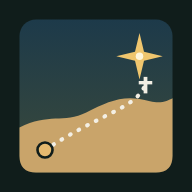

끌어서 이동 · 오른쪽 끌기·두 손가락으로 회전 · 휠·벌리기로 확대
탄생과 어린 시절은 갈릴리에서 이집트까지의 넓은 지형 지도입니다. 탄생과 피난, 열두 살의 유월절, 예루살렘으로 올라가는 마지막 길을 따라갑니다. 마지막 일주일은 주후 30년 무렵의 예루살렘을 3D로 복원한 지도에서 일요일부터 부활의 아침까지를 요일별로 따라갑니다. 그때의 삶은 당시의 통치자, 화폐와 물가, 세금, 집과 혼인, 먹을거리를 한눈에 정리한 쪽입니다.
▶ 따라가기를 누르면 길을 따라 사람이 걸어가고, 도착할 때마다 해설이 열립니다. ⏮ ⏭ 로 한 곳씩 옮기고, 1×를 눌러 속도를 바꿉니다.
사회상 핀을 켜면 지도 곳곳에 💰 경제 · 👑 정치 · 🏠 생활 이야기가 나타납니다. 넓은 지도에서는 정치 지도를 켜고 ‘주전 4년’과 ‘주후 30년’을 바꿔 보며, 헤롯 사후 왕국이 어떻게 나뉘었고 누가 다스렸는지 비교할 수 있습니다.
해설 아래의 꼬리표는 내용의 근거를 구분합니다. 본문 성경 기록, 고고학 발굴 자료, 전승 후대 교회 전승, 학설 학자들의 해석·모델, 논쟁 견해가 갈리는 부분입니다.
마태복음 1–2, 19–28장, 마가복음 10–16장, 누가복음 1–2, 9, 18–24장, 요한복음 11–20장을 기준으로 하고, 지명·인명과 인용은 개역개정을 따랐습니다.
교회에서 제공한 두 연구 정리(「예수 탄생 전후 요셉과 마리아의 동선 및 사건에 대한 사회학적·고고학적 심층 분석」, 「예수 수난주간의 일정과 동선에 대한 성서·사회·고고학적 심층 분석」)를 바탕으로, 요세푸스·필론의 기록과 미쉬나, 나사렛·예루살렘 발굴 보고에서 널리 알려진 내용을 더했습니다. 학자들 사이에 의견이 나뉘는 부분은 해설 안에 함께 밝혔습니다.
성전산 윤곽은 오늘날 하람 알샤리프(OpenStreetMap)를 따랐고, 성전·뜰의 치수는 미쉬나 「미돗」과 요세푸스의 기록을, 제1·제2성벽과 성문, 궁전의 위치는 발굴 보고를 바탕으로 한 추정선입니다. 집과 나무는 당시 도시의 밀도를 보여 주기 위한 배치이며 실제 집터가 아닙니다.
탄생은 헤롯이 죽은 주전 4년 이전, 수난주간은 주후 30년 또는 33년으로 보는 견해가 많아 두 날짜를 함께 적었습니다.
지형은 공개 지형 자료(Terrain Tiles · Mapzen/AWS Open Data — SRTM, GMTED, ETOPO1 등), 장소 좌표 일부는 OpenStreetMap(ODbL)을 참고했습니다. 지형은 오늘날의 모습이며, 예루살렘 지형에는 현대 도시의 높낮이가 일부 섞여 있습니다. 3D 표시에는 three.js(MIT)를 사용했습니다.
